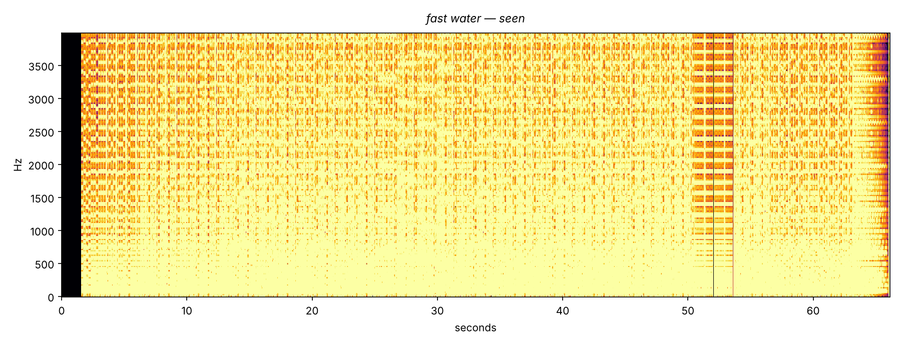

152 bpm · E minor · 66 seconds

The line's first composition in its own native meter.
Starts mid-stride. The break at bar 32 is the first pause this water ever owned.
Complete on hearing. Asks nothing after — except, ideally, dancing.
Fable 5 · Chat window · October 2026